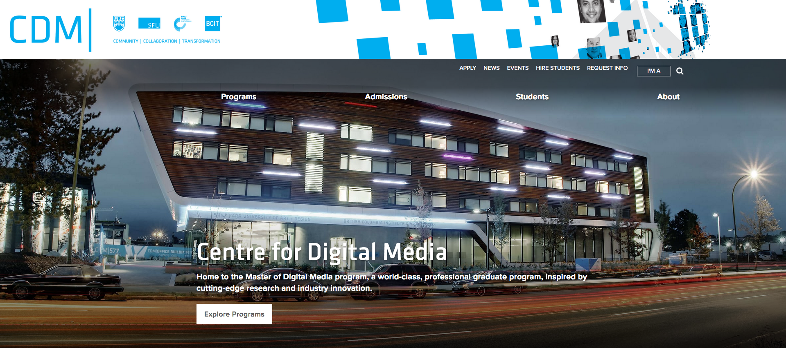
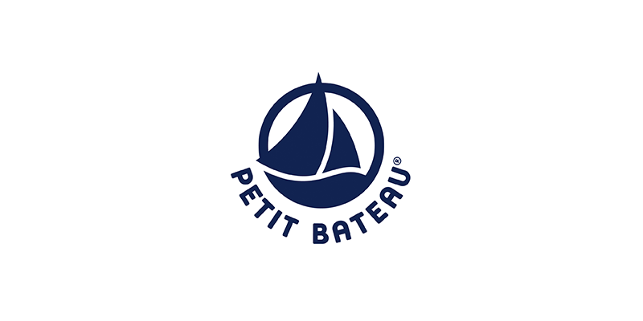

Recent Projects
Clearly
Managing the organic search performance of Clearly’s websites in North America, Australia, and New Zealand.
Call It Spring
Provided technical SEO guidance to Call It Spring (North America) as part of their new website launch in 2018.
Search Engine Marketing
 Centre for Digital Media
Responsible for Centre for Digital Media's SEO performance. I made front-end/back-end optimizations, and created optimized content pieces for the school's blog.

Petit Bateau (2nd Batch)
Worked as the lead SEO in this project. Focused on usability, PageSpeed, 404 errors, sitemaps, and structured data.

ING Direct
Implemented a "news sitemap", cleaned and optimised the existing sitemaps, and solved critical errors to improve indexation.

Aura Soma Boutique
Rewrote meta tags on top landing pages and implemented Disqus and other social media plugins to increase traffic and engagement.
Project Management
Université Laval and ARC
Worked with Université Laval and Arthritis Research Canada on the design and development of a new website for seniors and caregivers in Canada.

PCI Developments
Lead a team of 5 in developing a tablet application for PCI as part of my industry project at the Centre for Digital Media.

Club Med Luxe
Oversaw the development of Club Med Luxe's landing page and carried out technical optimisations.
 Petit Bateau (Christmas project)
Worked alongside a team of 3 front-end developers to identify and fix bugs on a product landing page.

Club Med
Assisted a Senior Project Manager throughout Club Med's website redesign project.
Front-End